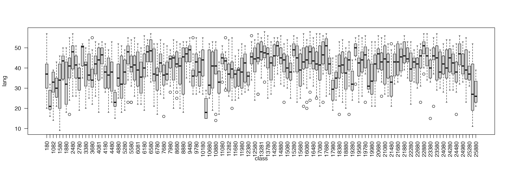

Bayesian Hierarchical Modelling
In this last practical we will consider the analysis of Bayesian
hierarchical models. As explained in the previous lecture, hierarchical
models provide a convenient tool to define models so that the different
sources of variation in the data are clearly identified. Bayesian
inference for highly structured hierarchical models can be difficult and
may require the use of Markov chain Monte Carlo methods. However,
packages such as BayesX and INLA, to mention
just two, provide a very convenient way to fit and make inference about
certain types of Bayesian hierarchical models.
Regarding software, we will use INLA to fit the models
in the examples from this point on. The reason is that it is a popular
software for Bayesian inference and very fast.
Linear Mixed Models
Linear mixed models were defined in the lecture as follows:
\[ Y_{ij} = X_{ij}\beta +\phi_i+\epsilon_{ij} \]
Here, Y_{ij} represents observation \(j\) in group \(i\), X_{ij} are a vector of covariates with coefficients \(\beta\), \(\phi_i\) i.i.d. random effects and \(\epsilon_{ij}\) a Gaussian error term. The distribution of the random effects \(\phi_i\) is Gaussian with zero mean and precision \(\tau_{\phi}\).
Multilevel Modelling
Multilevel models are a particular type of mixed-effects models in which observations are nested within groups, so that group effects are modelled using random effects. A typical example is that of students nested within classes.
For the next example, the nlschools data set (in package
MASS) will be used. This data set records data about
students’ performance (in particular, about a language score test) and
other variables. The variables in this data set are:
lang, language score test.IQ, verbal IQ.class, class ID.GS, class size as number of eighth-grade pupils recorded in the class.SES, social-economic status of pupil’s family.COMB, whether the pupils are taught in the multi-grade class with 7th-grade students.
The data set can be loaded and summarised as follows:
## lang IQ class GS SES
## Min. : 9.00 Min. : 4.00 15580 : 33 Min. :10.00 Min. :10.00
## 1st Qu.:35.00 1st Qu.:10.50 5480 : 31 1st Qu.:23.00 1st Qu.:20.00
## Median :42.00 Median :12.00 15980 : 31 Median :27.00 Median :27.00
## Mean :40.93 Mean :11.83 16180 : 31 Mean :26.51 Mean :27.81
## 3rd Qu.:48.00 3rd Qu.:13.00 18380 : 31 3rd Qu.:31.00 3rd Qu.:35.00
## Max. :58.00 Max. :18.00 5580 : 30 Max. :39.00 Max. :50.00
## (Other):2100
## COMB
## 0:1658
## 1: 629
##
##
##
##
## The model to fit will take lang as the response variable
and include IQ, GS, SES and
COMB as covariates (i.e., fixed effects). This model can
easily be fit with INLA as follows:
##
## Call:
## c("inla.core(formula = formula, family = family, contrasts = contrasts,
## ", " data = data, quantiles = quantiles, E = E, offset = offset, ", "
## scale = scale, weights = weights, Ntrials = Ntrials, strata = strata,
## ", " lp.scale = lp.scale, link.covariates = link.covariates, verbose =
## verbose, ", " lincomb = lincomb, selection = selection, control.compute
## = control.compute, ", " control.predictor = control.predictor,
## control.family = control.family, ", " control.inla = control.inla,
## control.fixed = control.fixed, ", " control.mode = control.mode,
## control.expert = control.expert, ", " control.hazard = control.hazard,
## control.lincomb = control.lincomb, ", " control.update =
## control.update, control.lp.scale = control.lp.scale, ", "
## control.pardiso = control.pardiso, only.hyperparam = only.hyperparam,
## ", " inla.call = inla.call, inla.arg = inla.arg, num.threads =
## num.threads, ", " blas.num.threads = blas.num.threads, keep = keep,
## working.directory = working.directory, ", " silent = silent, inla.mode
## = inla.mode, safe = FALSE, debug = debug, ", " .parent.frame =
## .parent.frame)")
## Time used:
## Pre = 3.97, Running = 0.843, Post = 0.0402, Total = 4.85
## Fixed effects:
## mean sd 0.025quant 0.5quant 0.975quant mode kld
## (Intercept) 9.685 1.070 7.585 9.685 11.784 9.685 0
## IQ 2.391 0.074 2.246 2.391 2.536 2.391 0
## GS -0.026 0.025 -0.076 -0.026 0.024 -0.026 0
## SES 0.148 0.014 0.120 0.148 0.175 0.148 0
## COMB1 -1.684 0.325 -2.322 -1.684 -1.046 -1.684 0
##
## Model hyperparameters:
## mean sd 0.025quant 0.5quant
## Precision for the Gaussian observations 0.021 0.001 0.02 0.021
## 0.975quant mode
## Precision for the Gaussian observations 0.022 0.021
##
## Marginal log-Likelihood: -7713.45
## is computed
## Posterior summaries for the linear predictor and the fitted values are computed
## (Posterior marginals needs also 'control.compute=list(return.marginals.predictor=TRUE)')Note that the previous model only includes fixed effects. The data
set includes class as the class ID to which each student
belongs. Class effects can have an impact on the performance of the
students, with students in the same class performing similarly in the
language test.
Very conveniently, INLA can include random effects in
the model by adding a term in the right hand side of the formula that
defined the model. Specifically, the term to add is
f(class, model = "iid") (see code below for the full
model). This will create a random effect indexed over variable
class and which is of type iid, i.e., the
random effects are independent and identically distributed using a
normal distribution with zero mean and precision \(\tau\).
Before fitting the model, the between-class variability can be explored by means of boxplots:
boxplot(lang ~ class, data = nlschools, las = 2)
The code to fit the model with random effects is:
##
## *** inla.core.safe: rerun to try to solve negative eigenvalue(s) in the Hessian
summary(m2)##
## Call:
## c("inla.core(formula = formula, family = family, contrasts = contrasts,
## ", " data = data, quantiles = quantiles, E = E, offset = offset, ", "
## scale = scale, weights = weights, Ntrials = Ntrials, strata = strata,
## ", " lp.scale = lp.scale, link.covariates = link.covariates, verbose =
## verbose, ", " lincomb = lincomb, selection = selection, control.compute
## = control.compute, ", " control.predictor = control.predictor,
## control.family = control.family, ", " control.inla = control.inla,
## control.fixed = control.fixed, ", " control.mode = control.mode,
## control.expert = control.expert, ", " control.hazard = control.hazard,
## control.lincomb = control.lincomb, ", " control.update =
## control.update, control.lp.scale = control.lp.scale, ", "
## control.pardiso = control.pardiso, only.hyperparam = only.hyperparam,
## ", " inla.call = inla.call, inla.arg = inla.arg, num.threads =
## num.threads, ", " blas.num.threads = blas.num.threads, keep = keep,
## working.directory = working.directory, ", " silent = silent, inla.mode
## = inla.mode, safe = FALSE, debug = debug, ", " .parent.frame =
## .parent.frame)")
## Time used:
## Pre = 2.47, Running = 0.957, Post = 0.038, Total = 3.47
## Fixed effects:
## mean sd 0.025quant 0.5quant 0.975quant mode kld
## (Intercept) 9.685 1.070 7.586 9.685 11.784 9.685 0
## IQ 2.391 0.074 2.246 2.391 2.536 2.391 0
## GS -0.026 0.025 -0.076 -0.026 0.024 -0.026 0
## SES 0.148 0.014 0.120 0.148 0.175 0.148 0
## COMB1 -1.684 0.325 -2.322 -1.684 -1.047 -1.684 0
##
## Random effects:
## Name Model
## class IID model
##
## Model hyperparameters:
## mean sd 0.025quant 0.5quant
## Precision for the Gaussian observations 2.10e-02 1.00e-03 0.02 0.021
## Precision for class 1.15e+04 1.02e+04 528.88 7925.926
## 0.975quant mode
## Precision for the Gaussian observations 2.20e-02 0.021
## Precision for class 3.88e+04 1305.814
##
## Marginal log-Likelihood: -7712.87
## is computed
## Posterior summaries for the linear predictor and the fitted values are computed
## (Posterior marginals needs also 'control.compute=list(return.marginals.predictor=TRUE)')Generalised Linear Mixed Models
Mixed effects models can also be considered within the context of generalised linear models. In this case, the linear predictor of observation \(i\), \(\eta_i\), can be defined as
\[ \eta_i = X_{ij}\beta +\phi_i \]
Compared to the previous setting of linear mixed effects models, note that now the distribution of the response could be other than Gaussian and that observations are not necessarily nested within groups.
Poisson regression
In this practical we will use the North Carolina Sudden Infant Death
Syndrome (SIDS) data set. It is available in the spData
package and it can be loaded using:
## CNTY.ID BIR74 SID74 NWBIR74
## Min. :1825 Min. : 248 Min. : 0.00 Min. : 1.0
## 1st Qu.:1902 1st Qu.: 1077 1st Qu.: 2.00 1st Qu.: 190.0
## Median :1982 Median : 2180 Median : 4.00 Median : 697.5
## Mean :1986 Mean : 3300 Mean : 6.67 Mean :1051.0
## 3rd Qu.:2067 3rd Qu.: 3936 3rd Qu.: 8.25 3rd Qu.:1168.5
## Max. :2241 Max. :21588 Max. :44.00 Max. :8027.0
## BIR79 SID79 NWBIR79 east
## Min. : 319 Min. : 0.00 Min. : 3.0 Min. : 19.0
## 1st Qu.: 1336 1st Qu.: 2.00 1st Qu.: 250.5 1st Qu.:178.8
## Median : 2636 Median : 5.00 Median : 874.5 Median :285.0
## Mean : 4224 Mean : 8.36 Mean : 1352.8 Mean :271.3
## 3rd Qu.: 4889 3rd Qu.:10.25 3rd Qu.: 1406.8 3rd Qu.:361.2
## Max. :30757 Max. :57.00 Max. :11631.0 Max. :482.0
## north x y lon
## Min. : 6.0 Min. :-328.04 Min. :3757 Min. :-84.08
## 1st Qu.: 97.0 1st Qu.: -60.55 1st Qu.:3920 1st Qu.:-81.20
## Median :125.5 Median : 114.38 Median :3963 Median :-79.26
## Mean :122.1 Mean : 91.46 Mean :3953 Mean :-79.51
## 3rd Qu.:151.5 3rd Qu.: 240.03 3rd Qu.:4000 3rd Qu.:-77.87
## Max. :182.0 Max. : 439.65 Max. :4060 Max. :-75.67
## lat L.id M.id
## Min. :33.92 Min. :1.00 Min. :1.00
## 1st Qu.:35.26 1st Qu.:1.00 1st Qu.:2.00
## Median :35.68 Median :2.00 Median :3.00
## Mean :35.62 Mean :2.12 Mean :2.67
## 3rd Qu.:36.05 3rd Qu.:3.00 3rd Qu.:3.25
## Max. :36.52 Max. :4.00 Max. :4.00A full description of the data set is provided in the associated
manual page (check with ?nc.sids) but in this practical we
will only consider these variables:
BIR74, number of births (1974-78).SID74, number of SID deaths (1974-78).NWBIR74, number of non-white births (1974-78).
These variables are measured at the county level in North Carolina, of which there are 100.
Because SID74 records the number of SID deaths, the
model is Poisson:
\[ O_i \mid \mu_i \sim Po(\mu_i),\ i=1,\ldots, 100 \] Here, \(O_i\) represents the number of cases in county \(i\) and \(\mu_i\) the mean. In addition, mean \(mu_i\) will be written as \(\mu_i = E_i \theta_i\), where \(E_i\) is the expected number of cases and \(\theta_i\) the relative risk in county \(i\).
The relative risk \(\theta_i\) is often modelled, on the log-scale, to be equal to a linear predictor:
\[ \log(\theta_i) = \beta_0 + \ldots \]
The expected number of cases is computed by multiplying the number of births in county \(i\) to the overall mortality rate
\[ r = \frac{\sum_{i=1}^{100}}{\sum_{i=1}^{100}B_i} \] where \(B_i\) represents the total number of births in country \(i\). Hence, the expected number of cases in county \(i\) is \(E_i = r B_i\).
# Overall mortality rate
r74 <- sum(nc.sids$SID74) / sum(nc.sids$BIR74)
# Expected cases
nc.sids$EXP74 <- r74 * nc.sids$BIR74A common measure of relative risk is the standardised mortality ratio (\(O_i / E_i\)):
nc.sids$SMR74 <- nc.sids$SID74 / nc.sids$EXP74A summary of the SMR can be obtained:
hist(nc.sids$SMR, xlab = "SMR")Values above 1 indicate that the county has more observed deaths than expected and that there might be an increased risk in the area.
As a covariate, we will compute the proportion of non-white births:
nc.sids$NWPROP74 <- nc.sids$NWBIR74/ nc.sids$BIR74There is a clear relationship between the SMR and the proportion of non-white births in a county:
plot(nc.sids$NWPROP74, nc.sids$SMR74)
# Correlation
cor(nc.sids$NWPROP74, nc.sids$SMR74)## [1] 0.5793901A simple Poisson regression can be fit by using the following code:
m1nc <- inla(
SID74 ~ 1 + NWPROP74,
family = "poisson",
E = nc.sids$EXP74,
data = nc.sids
)
summary(m1nc)##
## Call:
## c("inla.core(formula = formula, family = family, contrasts = contrasts,
## ", " data = data, quantiles = quantiles, E = E, offset = offset, ", "
## scale = scale, weights = weights, Ntrials = Ntrials, strata = strata,
## ", " lp.scale = lp.scale, link.covariates = link.covariates, verbose =
## verbose, ", " lincomb = lincomb, selection = selection, control.compute
## = control.compute, ", " control.predictor = control.predictor,
## control.family = control.family, ", " control.inla = control.inla,
## control.fixed = control.fixed, ", " control.mode = control.mode,
## control.expert = control.expert, ", " control.hazard = control.hazard,
## control.lincomb = control.lincomb, ", " control.update =
## control.update, control.lp.scale = control.lp.scale, ", "
## control.pardiso = control.pardiso, only.hyperparam = only.hyperparam,
## ", " inla.call = inla.call, inla.arg = inla.arg, num.threads =
## num.threads, ", " blas.num.threads = blas.num.threads, keep = keep,
## working.directory = working.directory, ", " silent = silent, inla.mode
## = inla.mode, safe = FALSE, debug = debug, ", " .parent.frame =
## .parent.frame)")
## Time used:
## Pre = 3.87, Running = 0.501, Post = 0.0143, Total = 4.38
## Fixed effects:
## mean sd 0.025quant 0.5quant 0.975quant mode kld
## (Intercept) -0.647 0.090 -0.824 -0.647 -0.471 -0.647 0
## NWPROP74 1.867 0.217 1.441 1.867 2.293 1.867 0
##
## Marginal log-Likelihood: -226.13
## is computed
## Posterior summaries for the linear predictor and the fitted values are computed
## (Posterior marginals needs also 'control.compute=list(return.marginals.predictor=TRUE)')Random effects can also be included to account for intrinsic differences between the counties:
# Index for random effects
nc.sids$ID <- 1:nrow(nc.sids)
# Model WITH covariate
m2nc <- inla(
SID74 ~ 1 + NWPROP74 + f(ID, model = "iid"),
family = "poisson",
E = nc.sids$EXP74,
data = as.data.frame(nc.sids)
)
summary(m2nc)##
## Call:
## c("inla.core(formula = formula, family = family, contrasts = contrasts,
## ", " data = data, quantiles = quantiles, E = E, offset = offset, ", "
## scale = scale, weights = weights, Ntrials = Ntrials, strata = strata,
## ", " lp.scale = lp.scale, link.covariates = link.covariates, verbose =
## verbose, ", " lincomb = lincomb, selection = selection, control.compute
## = control.compute, ", " control.predictor = control.predictor,
## control.family = control.family, ", " control.inla = control.inla,
## control.fixed = control.fixed, ", " control.mode = control.mode,
## control.expert = control.expert, ", " control.hazard = control.hazard,
## control.lincomb = control.lincomb, ", " control.update =
## control.update, control.lp.scale = control.lp.scale, ", "
## control.pardiso = control.pardiso, only.hyperparam = only.hyperparam,
## ", " inla.call = inla.call, inla.arg = inla.arg, num.threads =
## num.threads, ", " blas.num.threads = blas.num.threads, keep = keep,
## working.directory = working.directory, ", " silent = silent, inla.mode
## = inla.mode, safe = FALSE, debug = debug, ", " .parent.frame =
## .parent.frame)")
## Time used:
## Pre = 4.08, Running = 0.656, Post = 0.0241, Total = 4.76
## Fixed effects:
## mean sd 0.025quant 0.5quant 0.975quant mode kld
## (Intercept) -0.650 0.104 -0.856 -0.650 -0.447 -0.649 0
## NWPROP74 1.883 0.253 1.387 1.882 2.384 1.880 0
##
## Random effects:
## Name Model
## ID IID model
##
## Model hyperparameters:
## mean sd 0.025quant 0.5quant 0.975quant mode
## Precision for ID 134.13 229.39 9.57 31.05 416.28 15.76
##
## Marginal log-Likelihood: -227.83
## is computed
## Posterior summaries for the linear predictor and the fitted values are computed
## (Posterior marginals needs also 'control.compute=list(return.marginals.predictor=TRUE)')The role of the covariate can be explored by fitting a model without it:
# Model WITHOUT covariate
m3nc <- inla(
SID74 ~ 1 + f(ID, model = "iid"),
family = "poisson",
E = nc.sids$EXP74,
data = as.data.frame(nc.sids)
)
summary(m3nc)##
## Call:
## c("inla.core(formula = formula, family = family, contrasts = contrasts,
## ", " data = data, quantiles = quantiles, E = E, offset = offset, ", "
## scale = scale, weights = weights, Ntrials = Ntrials, strata = strata,
## ", " lp.scale = lp.scale, link.covariates = link.covariates, verbose =
## verbose, ", " lincomb = lincomb, selection = selection, control.compute
## = control.compute, ", " control.predictor = control.predictor,
## control.family = control.family, ", " control.inla = control.inla,
## control.fixed = control.fixed, ", " control.mode = control.mode,
## control.expert = control.expert, ", " control.hazard = control.hazard,
## control.lincomb = control.lincomb, ", " control.update =
## control.update, control.lp.scale = control.lp.scale, ", "
## control.pardiso = control.pardiso, only.hyperparam = only.hyperparam,
## ", " inla.call = inla.call, inla.arg = inla.arg, num.threads =
## num.threads, ", " blas.num.threads = blas.num.threads, keep = keep,
## working.directory = working.directory, ", " silent = silent, inla.mode
## = inla.mode, safe = FALSE, debug = debug, ", " .parent.frame =
## .parent.frame)")
## Time used:
## Pre = 4.11, Running = 0.654, Post = 0.0226, Total = 4.78
## Fixed effects:
## mean sd 0.025quant 0.5quant 0.975quant mode kld
## (Intercept) -0.03 0.063 -0.157 -0.028 0.091 -0.026 0
##
## Random effects:
## Name Model
## ID IID model
##
## Model hyperparameters:
## mean sd 0.025quant 0.5quant 0.975quant mode
## Precision for ID 7.26 2.57 3.79 6.77 13.56 6.00
##
## Marginal log-Likelihood: -245.56
## is computed
## Posterior summaries for the linear predictor and the fitted values are computed
## (Posterior marginals needs also 'control.compute=list(return.marginals.predictor=TRUE)')Now, notice the decrease in the estimate of the precision of the random effects (i.e., the variance increases). This means that values of the random effects are now larger than in the previous case as the random effects pick some of the effect explained by the covariate.
par(mfrow = c(1, 2))
boxplot(m2nc$summary.random$ID$mean, ylim = c(-1, 1), main = "With NWPROP74")
boxplot(m3nc$summary.random$ID$mean, ylim = c(-1, 1), main = "Without NWPROP74")
Further Extensions
Spatial random effects can be defined not to be independent and identically distributed. Instead, spatial or temporal correlation can be considered when defining them. For example, in the North Carolina SIDS data set, it is common to consider that two counties that are neighbours (i.e., share a boundary) will have similar relative risks. This can be taken into account in the model but assuming that the random effects are spatially autocorrelated. This is out of the scope of this introductory course but feel free to ask about this!!